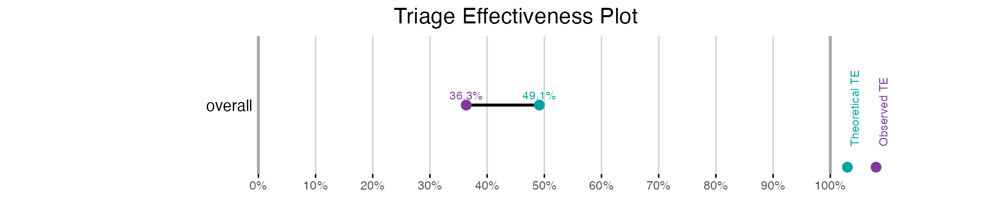

library(trieff)
#> Loaded trieff 0.8.5
#> System capable of parallel processing with multisession backend
#> Maximum available workers: 16
#> Note: Individual functions will determine optimal core usage at runtimeThe trieff package provides tools for analyzing and evaluating triage effectiveness in emergency departments. At its core, it measures how well triage systems achieve their fundamental purpose: reducing waiting times for time-critical patients.
The package uses two key reference points: 1. The waiting time without any triage system (first-come, first-served), defined as the mean waiting time for all patients. 2. The theoretical minimum waiting time achievable with perfect triage, defined as 0 waiting time.
From these reference points, we calculate Triage Effectiveness (TE), which creates a scale where: - 0% indicates no improvement over first-come, first-served - 100% indicates perfect prioritization where time-critical patients experience no waiting - Negative values indicate longer waiting times than a system without triage
Let’s walk through a basic workflow using the included synthetic
dataset sem_malmo_synth, which is based on emergency
department visits at Malmö Hospital.
First, we need to initialize our data, which prepares it for analysis by calculating wait times and setting up required variables:
# Initialize the data
data <- init(sem_malmo_synth)To understand how well the triage system performs without the effect of changes in priority that can happen after triage we simulate theoretical wait times. This shows what would happen if patients were seen strictly in order of their assigned priority:
# Run simulation for theoretical wait times
data <- sim_te(data)
#> [1] "Creating segments out of dataframe 2025-02-04 19:14:29.217967"
#> [1] "Initial segments: 3 Total patients: 124311"
#> [1] "Filtered to 3 segments with LOSET cases"
#> [1] "Total LOSET cases: 5491"
#> [1] "Creating batches 2025-02-04 19:14:29.376185"
#> [1] "Starting multisession with 1 cores. 2025-02-04 19:14:29.376303"
#> [1] "Simulations are done! 2025-02-04 19:15:17.605784"Now we can calculate both Observed Triage Effectiveness (OTE) and Theoretical Triage Effectiveness (TTE):
# Calculate TE metrics
te_results <- calc_te(data, overall_only = TRUE)
print(te_results)
#>
#> Triage Effectiveness Analysis Results
#> ===================================
#>
#> Results for Overall Results
#> ---------------------------
#> Total patients: 124311 (4.4% LOSET positive)
#>
#> Classification Metrics:
#> Sensitivity: 73.7%
#> Specificity: 65.9%
#>
#> Triage Effectiveness Metrics:
#> OTE: 29.9%
#> TTE: 52.8%
#> OTG: -23.0%
#>
#> Computation Information
#> =====================
#> Method: Direct calculation
#> Calculation time: 2025-02-04 19:15:17.66573The results show us: - OTE: How well the ED actually performed - TTE: How well it would have performed based on triage decisions alone - OTG (Observed-Theoretical Gap): The difference between OTE and TTE, indicating the impact of post-triage processes
Finally, we can visualize these results:
# Create a basic TE plot
plot_te(te_results)
“See the individual vignettes for each component for detailed usage, error handling, and advanced features:
vignette("sim_te") for simulation details and
performance considerations
vignette("calc_te") for analyzing TE
metrics
vignette("bootstrap") for statistical
validation
vignette("plot_te") for visualization
options
vignette("heatmap") for research and theoretical
analysis”
To use trieff, your data needs:
Arrival times - we recomend setting this to the time the patient gets its priority, named “arrival”
Times of physician contact, named “resolve”
Triage priorities, in numbers 1 being highest
Unit assignments (if applicable)
Time-critical status indicators, in the trieff package designated “loset”
See ?sem_malmo_synth for an example of how to structure
your data.
For more detailed information about specific functions, see their respective vignettes or help pages.